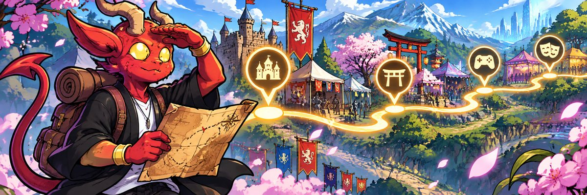

Agenda de eventos
Nada por aquí con esos filtros.
Prueba con otro tema o período, o pide una búsqueda nueva.
Restaurantes temáticos
Izakayas, tabernas vikingas, bares góticos y refugios geek en Santiago.

Ferias medievales, yokai, anime, ilustración, metal y otras rarezas en Chile
Nada por aquí con esos filtros.
Prueba con otro tema o período, o pide una búsqueda nueva.
Izakayas, tabernas vikingas, bares góticos y refugios geek en Santiago.